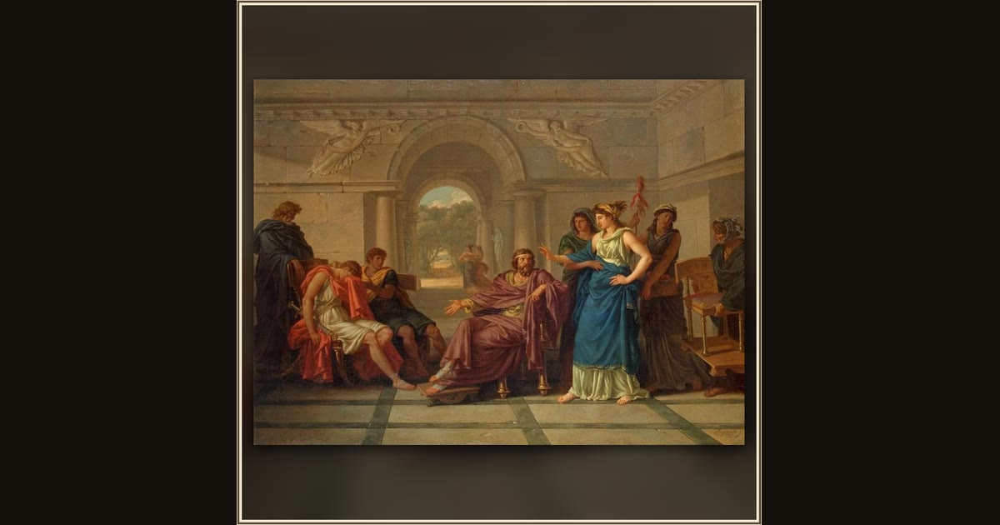

Helen Recognizing Telemachus
Jean-Jacques Lagrenée the Younger · 1795 · State Hermitage Museum · Saint Petersburg, Russia
In gleaming Sparta, beautiful Helen and King Menelaus suddenly realize their young guest is Telemachus — he looks just like his father. Explore its place in Book IV of the Odyssey.